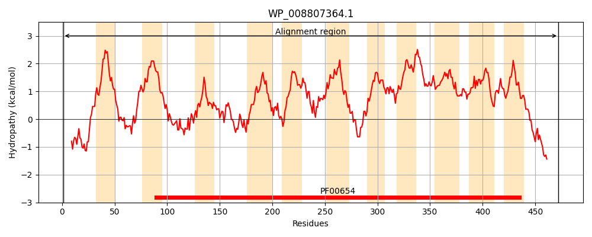
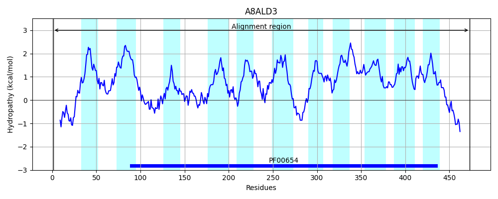
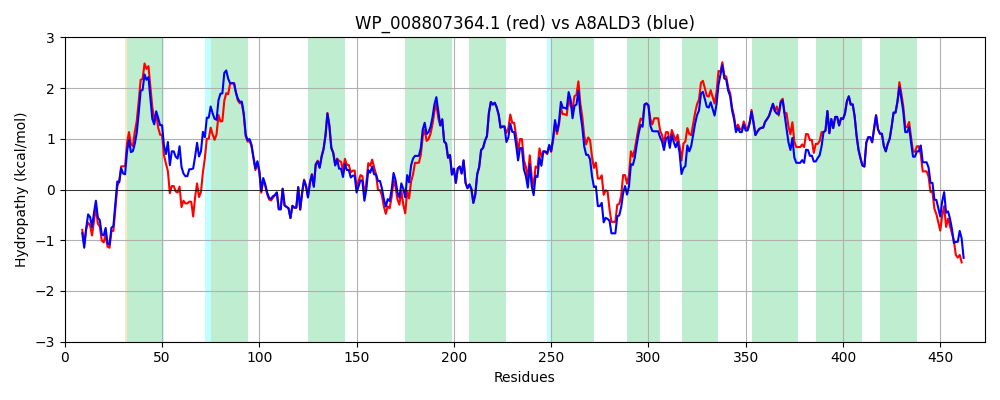

Hit Accession: A8ALD3
Hit TCID: 2.A.49.5.5
Hit Description: gnl|BL_ORD_ID|761 gnl|TC-DB|A8ALD3|2.A.49.5.5 H(+)/Cl(-) exchange transporter ClcA OS=Citrobacter koseri (strain ATCC BAA-895 / CDC 4225-83 / SGSC4696) GN=clcA PE=3 SV=1
Mach Len: 473
e:0.000000
Query TMS Count : 11
Hit TMS Count: 11
TMS-Overlap Score: 11.750000
Predicted Substrates:CHEBI:3731;chloride, CHEBI:5584;hydron
BLAST Alignment:
Score: 2114 , Bit scores: 818 bits, E-value: 0.0e+00, Alignment length: 473, Percentage identity: 87
Query: 1 MKAETPSFEAHQFVRVRRGDAVRRLIQRDKTPLAVLLMAAVVGTLAGLVGVAFEKSVNWVQNQRIGALAQVADHWYLVWPLAFILSALLAMVGYFLVRRFAPEAGGSGIPEIEGALEELRPVRWWRVLPVKFIGGMGTLGAGMVLGREGPMVQLGGNIGRMVLDIFRMRSPEARHTLLATGAASGLSAAFNAPLAGILFIIEEMRPQFRYNLISIKAVFTGVIMSSIVFRIFNGEAAIIEVGKLSNAPVNTLWLYLVLGMLFGCFGPLFNFLVLRTQDIFQRIHGGNIKKWVLMGGVIGGICGLLGLMQPSAVGGGFNLIPIAAAGNFSVGLLLFIFIARVVTTLICFSSGAPGGIFAPMLALGTLLGTAFGMAAIPLFPAYHLDAGTFAIAGMGALLAASVRAPLTGIVLVLEMTDNYQLILPMIITCLGATLLAQFLGGKPLYSTILQRTLAKQEAEQAAKAQQA-PRENT 472
M +TP+FEA Q VR+RRGD +RRL+QRDKTPLA+LL AAVVGT+ GL+GVAFEK+V WVQN RIGAL Q AD+ LVWPLAFILSALLAMVGYFLVR+FAPEAGGSGIPEIEGALEELRPVRWWRVLPVKF+GGMGTLGAGMVLGREGP VQ+GGNIGRMVLD+FRMRS EARHTLLATGAA+GLSAAFNAPLAGILFIIEEMRPQFRYNLISIKAVFTGVIMSSIVFRIFNGEA IIEVGKLSNAPVNTLWLYL+LGM+FGC GPLFN LVLRTQD+FQR HGG IKKWVLMGG IGG+CG+LGL++P A GGGFNLIPIAAAGN+SVGLLLFIFIARV+TTL+CFSSGAPGGIFAPMLALGTLLGTAFGMAA FP YHL+AGTFAIAGMGALLAASVRAPLTGIVLVLEMTDNYQLILPMIITCLGATLLAQF+GGKPLYSTIL RTLAKQ+AEQAAK+Q++ ENT
Sbjct: 1 MNTDTPTFEAQQVVRLRRGDLIRRLLQRDKTPLAILLTAAVVGTVTGLIGVAFEKAVTWVQNLRIGALVQTADYAILVWPLAFILSALLAMVGYFLVRKFAPEAGGSGIPEIEGALEELRPVRWWRVLPVKFVGGMGTLGAGMVLGREGPTVQIGGNIGRMVLDLFRMRSAEARHTLLATGAAAGLSAAFNAPLAGILFIIEEMRPQFRYNLISIKAVFTGVIMSSIVFRIFNGEAPIIEVGKLSNAPVNTLWLYLILGMIFGCVGPLFNHLVLRTQDMFQRFHGGEIKKWVLMGGAIGGLCGILGLIEPEAAGGGFNLIPIAAAGNYSVGLLLFIFIARVLTTLLCFSSGAPGGIFAPMLALGTLLGTAFGMAAAACFPQYHLEAGTFAIAGMGALLAASVRAPLTGIVLVLEMTDNYQLILPMIITCLGATLLAQFMGGKPLYSTILARTLAKQDAEQAAKSQRSVAGENT 473 | Protein Hydropathy Plots: |
|---|
|  |  |
Pairwise Alignment-Hydropathy Plot:
|
|---|
|  |